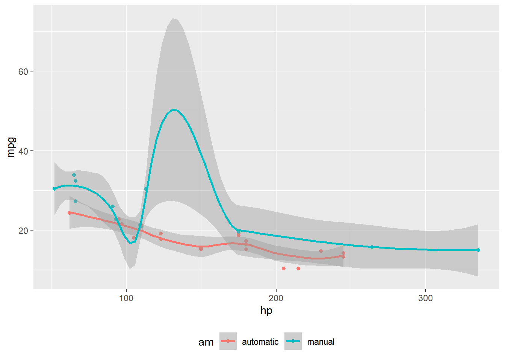

Article Layout
Overview
Quarto supports a variety of page layout options that enable you to author content that:
- Fills the main content region
- Overflows the content region
- Spans the entire page
- Occupies the document margin
Quarto uses the concept of columns to describe page layout (e.g. the “body” column, the “margin” column, etc.). Below we’ll describe how to arrange content into these columns.
All of the layout capabilities described in this document work for HTML output and many work for PDF and LaTeX output. For details about the PDF / LaTeX output, see PDF/LaTeX Layout.
Body Column
By default, elements are position in the body of the document and are allowed to span the content of the document, like the below.
.column-body
But if you’d like, you can extend content slightly outside the bounds of the body by creating a div with the .column-body-outset class. For example:
:::{.column-body-outset}
Outset content...
:::.column-body-outset
Page Column
If you need even more space for your content, you can use the .column-page class to make the content much wider, though stopping short of extending across the whole document.
.column-page
For example, to create a wider image, you could use:
:::{.column-page}

:::
For computational output, you can specify the page column in your code cell options. For example:
Code
```{r}
#| column: page
knitr::kable(
mtcars[1:6, 1:10]
)
```| mpg | cyl | disp | hp | drat | wt | qsec | vs | am | gear | |
|---|---|---|---|---|---|---|---|---|---|---|
| Mazda RX4 | 21.0 | 6 | 160 | 110 | 3.90 | 2.620 | 16.46 | 0 | 1 | 4 |
| Mazda RX4 Wag | 21.0 | 6 | 160 | 110 | 3.90 | 2.875 | 17.02 | 0 | 1 | 4 |
| Datsun 710 | 22.8 | 4 | 108 | 93 | 3.85 | 2.320 | 18.61 | 1 | 1 | 4 |
| Hornet 4 Drive | 21.4 | 6 | 258 | 110 | 3.08 | 3.215 | 19.44 | 1 | 0 | 3 |
| Hornet Sportabout | 18.7 | 8 | 360 | 175 | 3.15 | 3.440 | 17.02 | 0 | 0 | 3 |
| Valiant | 18.1 | 6 | 225 | 105 | 2.76 | 3.460 | 20.22 | 1 | 0 | 3 |
In addition, you can use .column-page-inset to inset the element from the page slightly, like so:
.column-page-inset
Screen Column
You can have content span the full width of the page with no margin (full bleed). For this, use the .column-screen class or specify column: screen on a code cell. For example:
::: {.column-screen}

:::.column-screen
The following code displays a Leaflet map across the whole page.
Code
```{r}
#| column: screen
library(leaflet)
leaflet() %>%
addTiles() %>% # Add default OpenStreetMap map tiles
addMarkers(lng=174.768, lat=-36.852, popup="The birthplace of R")
```Screen Inset
If you’d like a full width appearance, but would like to retain a margin, you can use inset or inset-shaded modifiers on the column. For example:
::: {.column-screen-inset}

:::.column-screen-inset
The inset-shaded modifier results in a block spanning the full width but wrapped with a lightly shaded background. For example:
Code
```{r}
#| column: screen-inset-shaded
library(leaflet)
leaflet() %>%
addTiles() %>% # Add default OpenStreetMap map tiles
addMarkers(lng=174.768, lat=-36.852, popup="The birthplace of R")
```Column layouts like screen-inset-shaded will work with advanced figure layout. For example, it is straightforward to create a multi column presentation of figures that spans the document:
Code
```{r}
#| column: screen-inset-shaded
#| layout-nrow: 1
plot(cars)
plot(iris)
plot(pressure)
```


Margin Content
You can place content within the right margin of Quarto document. For example, here we use the .column-margin class to place an image in the margin:
::: {.column-margin}

:::.column-margin
This also works for text content:
::: {.column-margin}
We know from *the first fundamental theorem of calculus* that for $x$ in $[a, b]$:
$$\frac{d}{dx}\left( \int_{a}^{x} f(u)\,du\right)=f(x).$$
:::We know from the first fundamental theorem of calculus that for \(x\) in \([a, b]\):
\[\frac{d}{dx}\left( \int_{a}^{x} f(u)\,du\right)=f(x).\]
Margin Figures
Figures that you create using code cells can be placed in the margin by using the column: margin code cell option. If the code produces more than one figure, each of the figures will be placed in the margin.
Code
```{r}
#| label: fig-mtcars
#| fig-cap: "MPG vs horsepower, colored by transmission."
#| column: margin
library(ggplot2)
```Warning: package 'ggplot2' was built under R version 4.2.2Code
```{r}
#| label: fig-mtcars
#| fig-cap: "MPG vs horsepower, colored by transmission."
#| column: margin
mtcars2 <- mtcars
mtcars2$am <- factor(
mtcars$am, labels = c('automatic', 'manual')
)
ggplot(mtcars2, aes(hp, mpg, color = am)) +
geom_point() +
geom_smooth(formula = y ~ x, method = "loess") +
theme(legend.position = 'bottom')
```
Margin Tables
You an also place tables in the margin of your document by specifying column: margin.
Code
```{r}
#| column: margin
knitr::kable(
mtcars[1:6, 1:3]
)
```| mpg | cyl | disp | |
|---|---|---|---|
| Mazda RX4 | 21.0 | 6 | 160 |
| Mazda RX4 Wag | 21.0 | 6 | 160 |
| Datsun 710 | 22.8 | 4 | 108 |
| Hornet 4 Drive | 21.4 | 6 | 258 |
| Hornet Sportabout | 18.7 | 8 | 360 |
| Valiant | 18.1 | 6 | 225 |
Multiple Outputs
You can also target specific output types (for example, figures) to be placed in the margin. For example, the following code will render a table summarizing the mtcars dataset and render a lot of the data in the margin next to the table.
Code
```{r}
#| fig-column: margin
mtcars2 <- mtcars
mtcars2$am <- factor(
mtcars$am, labels = c('automatic', 'manual')
)
knitr::kable(
mtcars[1:6, 1:6]
)
library(ggplot2)
ggplot(mtcars2, aes(hp, mpg, color = am)) +
geom_point() +
geom_smooth(formula = y ~ x, method = "loess") +
theme(legend.position = 'bottom')
```| mpg | cyl | disp | hp | drat | wt | |
|---|---|---|---|---|---|---|
| Mazda RX4 | 21.0 | 6 | 160 | 110 | 3.90 | 2.620 |
| Mazda RX4 Wag | 21.0 | 6 | 160 | 110 | 3.90 | 2.875 |
| Datsun 710 | 22.8 | 4 | 108 | 93 | 3.85 | 2.320 |
| Hornet 4 Drive | 21.4 | 6 | 258 | 110 | 3.08 | 3.215 |
| Hornet Sportabout | 18.7 | 8 | 360 | 175 | 3.15 | 3.440 |
| Valiant | 18.1 | 6 | 225 | 105 | 2.76 | 3.460 |

Page Breaks
The pagebreak shortcode enables you to insert a native pagebreak into a document (.e.g in LaTeX this would be a \newpage, in MS Word a docx-native pagebreak, in HTML a page-break-after: always CSS directive, etc.):
page 1
{{< pagebreak >}}
page 2Native pagebreaks are supported for HTML, LaTeX, Context, MS Word, Open Document, and ePub (for other formats a form-feed character \f is inserted).
Margin References
Footnotes and the bibliography typically appear at the end of the document, but you can choose to have them placed in the margin by setting the following option1 in the document front matter:
1 You can also position references in other location (such as the bottom of the block, section, or document).
---
reference-location: margin
citation-location: margin
---With these options set, footnotes and citations will (respectively) be automatically be placed in the margin of the document rather than the bottom of the page. As an example, when I cite @xie2018, the citation bibliography entry itself will now appear in the margin.
Asides
Asides allow you to place content aside from the content it is placed in. Asides look like footnotes, but do not include the footnote mark (the superscript number).
aside which places it in the margin without a footnote number.[This is a span that has the class aside which places it in the margin without a footnote number.]{.aside}Margin Captions
For figures and tables, you may leave the content in the body of the document while placing the caption in the margin of the document. Using cap-location: margin in a code cell or document front matter to control this. For example:
Code
```{r}
#| label: fig-cap-margin
#| fig-cap: "MPG vs horsepower, colored by transmission."
#| cap-location: margin
library(ggplot2)
mtcars2 <- mtcars
mtcars2$am <- factor(
mtcars$am, labels = c('automatic', 'manual')
)
ggplot(mtcars2, aes(hp, mpg, color = am)) +
geom_point() +
geom_smooth(formula = y ~ x, method = "loess") +
theme(legend.position = 'bottom')
```Overflowing Content
You can also extend content outside the body region on only the left or right side of the document by using the right and left versions of the body, page, and screen columns to layout your content. The left or right version of these columns are as follows:
.column-body-outset-right
.column-page-inset-right
.column-page-right
.column-screen-inset-right
.column-screen-right
.column-body-outset-left
.column-page-inset-left
.column-page-left
.column-screen-inset-left
.column-screen-left
Use a div with one of the above classes to align content into one of the overflow regions. This also works using the column option of executable code cells:
Code
```{r}
#| column: screen-inset-right
library(leaflet)
leaflet() %>%
addTiles() %>% # Add default OpenStreetMap map tiles
addMarkers(lng=174.768, lat=-36.852, popup="The birthplace of R")
```Options Reference
Global Options
Some layout options can be specified globally in document yaml. For example:
---
fig-cap-location: margin
reference-location: margin
---All of the below options currently only support setting a value of margin which tells Quarto to place the corresponding element in the margin.
| Option | Description |
|---|---|
reference-location |
Where to place footnotes. Defaults to document.[ document | section | block | margin ] |
citation-location |
Where to place citations. Defaults to document.[ document | margin ] |
cap-location |
Where to place figure and table captions. Defaults to `bottom` for figures and top for tables.[ top | bottom | margin] |
fig-cap-location |
Where to place figure captions. Defaults to bottom.[ top | bottom | margin] |
tbl-cap-location |
Where to place table captions. Defaults to top.[ top | bottom | margin] |
Code Cell Options
You can also set layout column on specific code cells. This controls the layout of content that is produced by the code cell.
```{r}
#| column: page
plot(cars)
```| Option | Description |
|---|---|
column |
Layout column to use for code cell outputs. See column options below. |
fig-column |
Layout column to use for code cell figure outputs. See column options below. |
tbl-column |
Layout column to use for code cell table outputs. See column options below. |
cap-location |
Where to place figure and table captions produced by this code cell. Defaults to bottom for figures and top for tables.[ top | bottom | margin] |
fig-cap-location |
Where to place captions for figures produced by this code cell. Defaults to inline.[ inline | margin] |
tbl-cap-location |
Where to place captions for tables produced by this code cell. Defaults to inline.[ inline | margin] |
Using Classes
In addition to global and code cell specific options, you may use divs with layout classes (prefixed with .column-) to arrange content into columns:
::: {.column-margin}
This content will appear in the margin!
:::Available Columns
Here are all of the available column specifiers:
| Column | Code Cell column
|
Class Name |
|---|---|---|
| Body | |
|
| Page | |
|
| Screen Inset | |
|
| Screen | |
|
| Margin | |
|
PDF/LaTeX Layout
While most of the layout capabilities described are supported for both HTML and PDF output, some are available only for HTML output. You can use the full set of columns for HTML. Then, when you render PDF or LaTeX output, content will automatically be placed in the most appropriate related column (typically this will mean using the main column and right margin). Here is how columns are mapped:
- Any column that uses the right margin (e.g.
page,screen,screen-right, etc. will be rendered aspage-rightin LaTeX. - Any column that uses the left margin will be rendered as normal body content.
Page Geometry
When you render a PDF using content in the margin or content that spans the page, Quarto automatically will adjust the page geometry for the default Quarto LaTeX document classes (KOMA scrartcl, scrreport, or scrbook) to create a slightly narrower body content region and a slightly wider margin region. This adjustment will incorporate known paper sizes to create a reasonable page geometry for most content.
You can control the page geometry directly yourself by setting geometry options in your document’s front matter. For example:
---
geometry:
- left=.75in
- textwidth=4.5in
- marginparsep=.25in
- marginparwidth=2.25in
---You can use these options to control the page geometry for the built in document classes or to customize the geometry of other document classes that you may be using.
If you’d like to view the page geometry in your rendered PDF, you can pass showframe to the geometry option as in the below example.
---
geometry:
- showframe
---Code Blocks
When rendering a PDF that uses the margins for content, Quarto automatically adjusts the appearance of code blocks. Rather than having a solid background color, a left border treatment is used.
This enables non-breaking code to overflow into the margin without cosmetic issues created by the code block background (which does not overflow into the margin region).
You can disable this treatment by setting the following code-block-border-left: false in your document front matter.